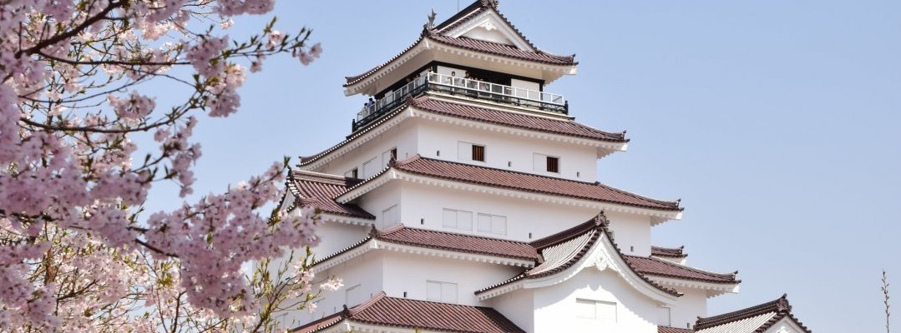

<!doctype html>
<html lang="en">
  <head>
    <!-- Required meta tags -->
    <meta charset="utf-8">
    <meta name="viewport" content="width=device-width, initial-scale=1, shrink-to-fit=no">

    <title>お食事のご案内【Montana公式】</title>
    <meta http-equiv="content-type" charset="utf-8">
    <meta name="description" content="アルツ磐梯スキー場までわずか５分磐梯高原ペンション「ガストホフ　モンターニャ」では四季折々の姿を見せる豊かな自然や磐梯高原の星空を一望でき、開放感に満ちた空間を味わえます。西洋風にコーディネートされた可愛らしい客室でおくつろぎください。">
    <link rel="stylesheet" type="text/css" href="style.css">


    <!--css-->
    <link href="css/nav.css" rel="stylesheet" type="text/css" />
    <link href="css/common.css" rel="stylesheet" type="text/css" />
    <link href="css/nearplace.css" rel="stylesheet" type="text/css">


    <!-- Bootstrap CSS -->
    <link rel="stylesheet" href="https://stackpath.bootstrapcdn.com/bootstrap/4.3.1/css/bootstrap.min.css" integrity="sha384-ggOyR0iXCbMQv3Xipma34MD+dH/1fQ784/j6cY/iJTQUOhcWr7x9JvoRxT2MZw1T" crossorigin="anonymous">

<!-- slide -->
  </head>
  <body>


    <div>
      
    </div>
  <!-- slide end -->

<!-- navbar  -->
    <nav class="navbar navbar-expand-lg navbar-dark" style="background-color: #bda387;">
    <button class="navbar-toggler" type="button" data-toggle="collapse" data-target="#navbar" aria-controls="navbar" aria-expanded="false" style="border-color:rgba(0,0,0,0);">
      <span class="navbar-toggler-icon"></span>
    </button>

    <div class="collapse navbar-collapse justify-content-md-center" id="navbar">
      <ul class="navbar-nav">
        <li class="nav-item ">
          <a class="nav-link ml-5" href="index.html">HOME</a>
        </li>
        <li class="nav-item">
          <a class="nav-link ml-5" href="1_dish.html">お食事</a>
        </li>
        <li class="nav-item">
          <a class="nav-link ml-5" href="2_room.html">客室</a>
        </li>
        <li class="nav-item">
          <a class="nav-link ml-5" href="3_fac.html">館内施設</a>
        </li>
        <li class="nav-item">
          <a class="nav-link ml-5" href="4_access.html">アクセス</a>
        </li>
        <li class="nav-item active">
          <a class="nav-link ml-5" href="#">周辺情報</a>
        </li>
        <li class="nav-item">
          <a class="nav-link ml-5" href="6_qa.html">Q&A</a>
        </li>
      </ul>
    </div>
  </nav>
<!-- navbar end -->


<section id="root">
  <article class="waku">
    <div id="kk">
<h1> 周辺情報のご案内 </h1>
</div>
</article>
</section>


<section id="root">
  <article class="waku">


<div class="row flex">
  <!--ここから変更-->
  
  <h2 class="midashi fas fa-skiing"> スキー場のご案内</h2>
  <section class="gridWrapper">


    <article class="grid">
      <div class="box">
        <a href="https://www.alts.co.jp"><h3 class="moji">アルツ磐梯スキー場</h3></a>
        <a href="https://www.alts.co.jp">
        <p>アルツ磐梯スキー場まで車5分!<br /><br>
        最長滑走距離は約3km,総滑走距離は約30kmと上級者から初級者まで広大な滑りが楽しめ、施設やイベントが充実しています。<br></p><pre>                  → go to Webpage </pre> <br /></a>
    </article>

    <article class="grid">
      <div class="box">
        <a href="http://grandsunpia-inawashi</a>ro.com"><h3 class="moji">猪苗代リゾートスキー場</h3>
        <a href="http://grandsunpia-inawashiro.com">
        <p>アルツ磐梯スキー場まで車10分!<br /><br>
        雪の磐梯山から蒼い猪苗代湖を望みながらの滑走。猪苗代湖にダイビングするような絶好のロケーションです。<br><br></p><pre>                  → go to Webpage </pre> <br /></a>
      </div>
    </article>

    <article class="grid">
      <div class="box">
        <a href="https://www.inawashiro-ski.com"><h3 class="moji">猪苗代スキー場</h3></a>
        <a href="https://www.inawashiro-ski.com">
        <p>アルツ磐梯スキー場まで車15分!<br /><br>
        磐梯山周辺の数あるスキー場の代表格がココ。初心者から上級者までおまかせのダイナミックなスケールです。<br><br></p><pre>                  → go to Webpage </pre> <br /></a>
      </div>
    </article>

    </div>
    <div class="calm">

    <article class="grid">
      <div class="box">
        <a href="https://www.ski-minowa.jp"><h3 class="moji">箕輪スキー場</h3></a>
        <a href="https://www.ski-minowa.jp">
        <p>箕輪スキー場まで車35分!<br /><br>
        一番早くオープンするスキー場。毎年11月下旬にオープンします。標高は雪質の良さにもつながり、箕輪山の樹氷とパウダースノーが最大の魅力です。<br></p><pre>                  → go to Webpage </pre> <br /></a>
      </div>
    </article>

       <article class="grid">
      <div class="box">
        <a href="https://www.nekoma.co.jp"><h3 class="moji">猫魔スキー場</h3></a>
        <a href="https://www.nekoma.co.jp">
        <p>猫魔スキー場まで車33分!<br /><br>
        日本でも有数の超微粒雪“ミクロファインスノー”が降ります。フラットバーンからコブ斜面まであり、上級者から初級者まで誰もが楽しめます。<br><br></p><pre>                  → go to Webpage </pre> <br /></a>
      </div>
    </article>

    </div>


  </section>
  </article><!--/waku-->

  <article class="waku">


<div class="row flex">
  <!--ここから変更-->
  
  <h2 class="midashi fas fa-map-marked"> オススメ観光スポットのご案内</h2>

  <section class="gridWrapper">

    <div id="air">
    <article class="grid">
      <div class="boxa">
        <a href="http://laviespa.com"><h3 class="moji">青沼「五色沼」</h3></a>
        <a href="http://laviespa.com">
        <p>青沼付近まで車31分!<br /><br>
       「神秘の湖沼」といわれ、自然が作り出したものと思えない綺麗な色の沼です。天候や季節、角度で少しずつ違った色が見えオススメです。</p><pre>                  → go to Webpage </pre> <br></a>
      </div>
    </article>

    <article class="grid">
      <div class="box">
        <a href="https://www.urabandai-inf.com/?page_id=24966"><h3 class="moji">磐梯山</h3></a>
        <a href="https://www.urabandai-inf.com/?page_id=24966">
        <p>磐梯山まで車19分!<br /><br>
        標高1,816m。初級者向けから上級者向けまで様々なコースがあり、初級者コースで巡る五色沼は神秘的な美しさです。</p><pre>                  → go to Webpage </pre> <br /></a>
      </div>
    </article>

    <article class="grid">
      <div class="box">
        <a href="http://www.tsurugajo.com/turugajo/shiro-top.html"><h3 class="moji">鶴ヶ城</h3></a>
        <a href="http://www.tsurugajo.com/turugajo/shiro-top.html">
        <p>鶴ヶ城まで車30分!<br /><br>
        鶴ヶ城は一番人気な観光スポットです。よくイベントを催しており、花見場所として人気です。<br><br></p><pre>                  → go to Webpage </pre> <br /></a>
      </div>
    </article>


    </div>

  </section>
  </article><!--/waku-->


  <article class="waku">
<div class="row flex">
  <section class="gridWrapper">

   <div class="boxA">

    <div class="box1">
      <a href="http://ouchi-juku.com"><h3 class="tit">< 大内宿 ></h3>
    </div>
    <div class="box2">
      <a href="https://www.tif.ne.jp/jp/spot/spot_disp.php?id=5712"><h3 class="tit">< しぶき氷 ></h3>
    </div>
    <div class="box3">
      <a href="https://www.urabandai-inf.com/?page_id=25191o"><h3 class="tit">< 雄国沼湿原 ></h3>
    </div>
    <div class="box4">
      <a href="https://www.bandaisan.or.jp/information/"><h3 class="tit">< 猪苗代湖 ></h3>
    </div>

   </div>


  </section>
</div>
  </article><!--/waku-->


  <article class="waku">


<div class="row flex">
  <!--ここから変更-->
  
  <h2 class="midashi fas fa-golf-ball"> ゴルフ場のご案内</h2>

<div id="air">
  <section class="gridWrapper">


    <article class="grid">
      <div class="box">
        <a href="http://www.aizubandai-cc.co.jp/bandai/aizubandai-cc.html"><h3 class="moji">会津磐梯カントリークラブ</h3></a>
        <a href="http://www.aizubandai-cc.co.jp/bandai/aizubandai-cc.html">
        <p>会津磐梯カントリークラブまで車25分!<br /></p><pre>                  → go to Webpage </pre> <br /></a>
      </div>
    </article>

    <article class="grid">
      <div class="box">
        <a href="https://mellowwood.jp"><h3 class="moji">メローウッドゴルフクラブ</h3></a>
        <a href="https://mellowwood.jp">
        <p>メローウッドゴルフクラブまで車8分!<br /><br></p><pre>                  → go to Webpage </pre> <br /></a>
      </div>
    </article>

    <article class="grid and">
      <div class="box"></a>
        <a href="http://www.inawashiro-gc.com"><h3 class="moji">猪苗代ゴルフクラブ</h3>
        <a href="http://www.inawashiro-gc.com">
        <p>猪苗代ゴルフクラブまで車30分!<br /><br></p><pre>                  → go to Webpage </pre> <br /></a>
      </div>
    </article>

    </div>

  </section>
  </article><!--/waku-->
</section>


<span class="d-block p-2 text-white" style="background-color: #00000000; margin-bottom: 10vh;"></span>

<!-- footer -->


  <div class="row" style="background-color: #124f07; width:100%;">
<!-- footer nav -->
    <div class="footmenu">
     <ul>
      <li><a href="index.html">HOME</a></li>
      <li><a href="index.html">お食事</a></li>
      <li><a href="index.html">客室</a></li>
      <li><a href="index.html">館内施設</a></li>
      <li><a href="index.html">アクセス</a></li>
      <li><a href="index.html">周辺情報</a></li>
      <li><a href="sample.html"></a></li>
     </ul>
    </div>

<!-- footer nav end -->

<!-- Info -->
      <li class="media mb-3" style="margin: 4vh 28vw 0vh 28vw;">
        
        <div class="media-body" style="margin-top:2vh; font-size: 2vmax;">
          <a class="text-white ml-3" style="font-size: 1.5vw;">ガストホフ</a>
          <a class="text-white ml-3" style="font-size: 3vw;">モンターニャ</a>
          <br><a class="text-white">
          <br><span class="badge badge-pill badge-success ml-3">TEL</span>　0242-73-3733
          <br> <span class="badge badge-pill badge-success ml-3">FAX</span>　0242-73-3735
          <br>
          <br><a class="text-white ml-3" style="font-size: 1.7vw;">〒969-3301</a>
          <br><a class="text-white ml-3" style="font-size: 1.7vw;">福島県耶麻郡磐梯町七ッ森7351-2</a>
        </div>
      </li>
  <!-- Info end -->

      <!-- SNS block -->
      <span class="d-block p-2 text-white"  style="background-color: #124f07; width:98.9%;">
        <center>
      <a href="https://www.facebook.com/GasutohofuMontanyaMontana"><span class="text-white ml-2"> facebook</span></a>
      <a class="ml-5"></a>
      <a href="https://www.instagram.com/montana.aizu"><span class="text-white ml-2"> Instagram</span></a>
      <a class="text-white ml-5">Gasthof MONTANA © 2019</a>
      </center>
      </span>
      <span class="d-block p-2 text-white" style="background-color: #00000000;"></span>
      <!-- SNS_end -->

    </div>

  <!-- footer end-->


    <!-- Optional JavaScript -->
    <!-- jQuery first, then Popper.js, then Bootstrap JS -->
    <script src="https://code.jquery.com/jquery-3.2.1.slim.min.js" integrity="sha384-KJ3o2DKtIkvYIK3UENzmM7KCkRr/rE9/Qpg6aAZGJwFDMVNA/GpGFF93hXpG5KkN" crossorigin="anonymous"></script>
    <script src="https://cdnjs.cloudflare.com/ajax/libs/popper.js/1.12.9/umd/popper.min.js" integrity="sha384-ApNbgh9B+Y1QKtv3Rn7W3mgPxhU9K/ScQsAP7hUibX39j7fakFPskvXusvfa0b4Q" crossorigin="anonymous"></script>
    <script src="https://maxcdn.bootstrapcdn.com/bootstrap/4.0.0/js/bootstrap.min.js" integrity="sha384-JZR6Spejh4U02d8jOt6vLEHfe/JQGiRRSQQxSfFWpi1MquVdAyjUar5+76PVCmYl" crossorigin="anonymous"></script>
  </body>
</html>
